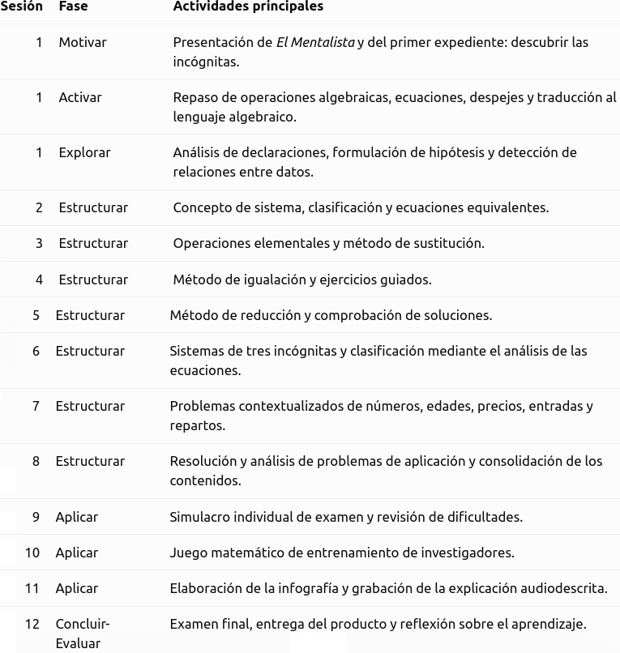

Justificación didáctica
La situación de aprendizaje El mentalista: El caso de las incógnitas, dirigida a 4º de ESO de Matemáticas B, utiliza el contexto narrativo de la serie El Mentalista para abordar los sistemas de ecuaciones como herramientas para analizar pistas, relacionar datos y justificar conclusiones. Se trabajan la resolución de problemas, el razonamiento lógico, la comunicación matemática y la gestión del error mediante situaciones contextualizadas y retos progresivos.
En consonancia con los principios pedagógicos de la LOMLOE, se promueven el aprendizaje significativo, la aplicación práctica de los conocimientos, la autonomía, la cooperación y la reflexión sobre el propio aprendizaje. Asimismo, se integran los siguientes Objetivos de Desarrollo Sostenible:
- ODS 4. Educación de calidad: mediante actividades inclusivas, accesibles y adaptadas a diferentes ritmos de aprendizaje.
- ODS 5. Igualdad de género: visibilizando el papel de Teresa Lisbon como líder del equipo investigador y fomentando la participación equitativa y la eliminación de estereotipos.
- ODS 16. Paz, justicia e instituciones sólidas: utilizando la investigación como hilo narrativo para reflexionar sobre la importancia de las pruebas, el razonamiento, la imparcialidad y las conclusiones justificadas.
Temporización
Se propone una duración aproximada de 12 sesiones de 55 a 60 minutos, adaptable a las características del grupo.

La fase 4, Estructurar, concentra el mayor número de sesiones, ya que constituye el núcleo de construcción y consolidación de los aprendizajes.
La temporización podrá flexibilizarse en función del ritmo del grupo, ampliando el tiempo dedicado a aquellos contenidos que presenten mayores dificultades.
Producto final
El alumnado elaborará una infografía-resumen sobre los sistemas de ecuaciones, acompañada de una explicación audiodescrita con su propia voz. Deberá incluir la clasificación de los sistemas, los principales métodos de resolución, las operaciones elementales, los pasos para resolver problemas y un ejemplo práctico correctamente planteado, resuelto y comprobado.
El producto podrá realizarse mediante herramientas digitales o en formato manual, y permitirá evaluar tanto el dominio matemático como la capacidad de síntesis, comunicación y competencia digital.
Rúbrica
Para evaluar el producto final puede usar la siguiente rúbrica:
| 5. Excelente | 4. Notable | 3. Adecuado | 2. Básico | 1. Insuficiente | |
|---|---|---|---|---|---|
| 1. Corrección y dominio de los contenidos matemáticos | Los contenidos son completos, rigurosos y muestran un dominio sólido y preciso. (1.0) | Los contenidos son correctos y completos, con alguna imprecisión menor. (0.75) | Recoge los contenidos fundamentales, aunque presenta algunos errores. (0.5) | Los contenidos son incompletos y presenta errores relevantes. (0.25) | Presenta importantes carencias y errores conceptuales. (0.1) |
| 2. Aplicación y razonamiento matemático | Selecciona estrategias adecuadas, las desarrolla con rigor y justifica de forma clara los procedimientos y resultados. (1.0) | Utiliza estrategias adecuadas y justifica correctamente la mayor parte de los procedimientos. (0.75) | Aplica procedimientos adecuados, aunque la justificación es limitada. (0.5) | Predomina la aplicación mecánica de procedimientos y existen dificultades de razonamiento. (0.25) | No utiliza estrategias adecuadas o no justifica los procedimientos. (0.1) |
| 3. Organización y síntesis de la información | Selecciona, relaciona y jerarquiza la información con gran capacidad de síntesis, facilitando una visión global de los contenidos. (1.0) | La información está bien seleccionada y organizada, con una síntesis adecuada. (0.75) | La información es suficiente y está razonablemente organizada. (0.5) | Incluye información poco relevante, repetitiva o insuficientemente estructurada. (0.25) | La información aparece desorganizada y dificulta la comprensión. (0.1) |
| 4. Conexión y transferencia de los aprendizajes | Relaciona diferentes contenidos matemáticos y los aplica de forma flexible a situaciones nuevas, estableciendo conexiones relevantes. (1.0) | Establece conexiones entre contenidos y los aplica adecuadamente a situaciones contextualizadas. (0.75) | Relaciona algunos contenidos y aplica procedimientos conocidos en situaciones similares a las trabajadas. (0.5) | Tiene dificultades para relacionar contenidos o transferir los procedimientos a situaciones diferentes. (0.25) | No establece conexiones significativas ni consigue aplicar los aprendizajes a nuevas situaciones. (0.1) |
| 5. Comunicación matemática en la infografía | Utiliza con precisión el lenguaje, la simbología y las representaciones matemáticas; las explicaciones son rigurosas y claras. (1.0) | Utiliza adecuadamente el lenguaje y la notación matemática, con pequeñas imprecisiones. (0.75) | La comunicación matemática es comprensible, aunque presenta algunos errores o imprecisiones. (0.5) | Presenta errores frecuentes de notación, lenguaje o representación. (0.25) | La comunicación matemática resulta confusa o incorrecta. (0.1) |
| 6. Diseño, legibilidad y recursos visuales | La estructura visual, distribución, tipografía, imágenes y recursos gráficos están plenamente al servicio de la comprensión matemática. (1.0) | El diseño es claro, equilibrado y facilita la comprensión. (0.75) | El diseño es funcional, aunque presenta algunos aspectos mejorables. (0.5) | La organización visual dificulta parcialmente la lectura o comprensión. (0.25) | El diseño dificulta significativamente el acceso a la información. (0.1) |
| 7. Audiodescripción: claridad y precisión | La audiodescripción permite reconstruir con precisión la estructura, elementos visuales y contenidos matemáticos de la infografía sin necesidad de verla. (1.0) | Describe adecuadamente los elementos esenciales y los contenidos principales. (0.75) | Permite comprender la información fundamental, aunque omite algunos aspectos relevantes. (0.5) | La descripción es incompleta o poco estructurada. (0.25) | No permite comprender adecuadamente el contenido de la infografía. (0.1) |
| 8. Expresión oral y adecuación del audio | Discurso fluido, estructurado y preciso, con vocabulario matemático adecuado y excelente control del ritmo, volumen y entonación. (1.0) | Expresión clara y adecuada, con pequeñas dificultades de fluidez. (0.75) | El discurso es comprensible, aunque presenta algunas dificultades expresivas. (0.5) | Las dificultades de expresión afectan parcialmente a la comprensión. (0.25) | La comunicación oral resulta difícil de seguir. (0.1) |
| 9. Disposición ante la tarea y compromiso con el aprendizaje | Se implica de forma constante, afronta la tarea con iniciativa y muestra una disposición constructiva incluso ante las dificultades. (1.0) | Mantiene una implicación constante y una actitud favorable durante el desarrollo de la tarea. (0.75) | Realiza la tarea adecuadamente, aunque su implicación es irregular en algunos momentos. (0.5) | Muestra escasa iniciativa o implicación y necesita estímulos frecuentes para avanzar. (0.25) | Presenta una actitud poco favorable hacia la tarea y apenas se implica en su desarrollo. (0.1) |
| 10. Flexibilidad cognitiva y curiosidad matemática | Explora alternativas, formula preguntas, establece conexiones inesperadas y modifica sus estrategias cuando la situación lo requiere. (1.0) | Considera diferentes posibilidades y muestra interés por comprender y explorar más allá del procedimiento inmediato. (0.75) | Acepta alternativas y muestra curiosidad ante algunas situaciones, aunque tiende a utilizar estrategias conocidas. (0.5) | Se muestra poco flexible ante procedimientos diferentes y tiene dificultades para explorar alternativas. (0.25) | Se aferra a un único procedimiento y muestra escaso interés por explorar o comprender otras posibilidades. (0.1) |
- Actividad
- Nombre
- Fecha
- Puntuación
- Notas
- Reiniciar
- Imprimir
- Aplicar
- Ventana nueva
Metodología
Se empleará una metodología activa basada en el aprendizaje basado en problemas (ABP), la investigación guiada y la gamificación. El alumnado asumirá el papel de integrante del equipo del CBI que colabora con Patrick Jane y Teresa Lisbon para resolver diferentes expedientes matemáticos.
La secuencia combinará la exploración de conocimientos previos, la explicación y práctica guiada de los contenidos, la resolución autónoma de problemas y los retos de aplicación. Se incorporarán actividades individuales y cooperativas, retroalimentación continua y reflexión sobre los errores, favoreciendo la autonomía y la transferencia de los aprendizajes.
Principios DUA aplicados
- Múltiples formas de implicación: narrativa basada en El Mentalista, expedientes, retos gamificados y actividades con dificultad progresiva para despertar la curiosidad y mantener la motivación.
- Múltiples formas de representación: explicaciones paso a paso, ejemplos resueltos, expresiones algebraicas, esquemas visuales, vídeos de Youtube, y problemas contextualizados para facilitar la comprensión.
- Múltiples formas de acción y expresión: posibilidad de elaborar la infografía en diferentes formatos y herramientas, explicar oralmente los procedimientos y demostrar los aprendizajes mediante ejercicios, juegos y pruebas individuales.
Se ofrecerán instrucciones claras, modelos de referencia, apoyos visuales y oportunidades de revisión para atender a la diversidad del aula y favorecer la participación de todo el alumnado.